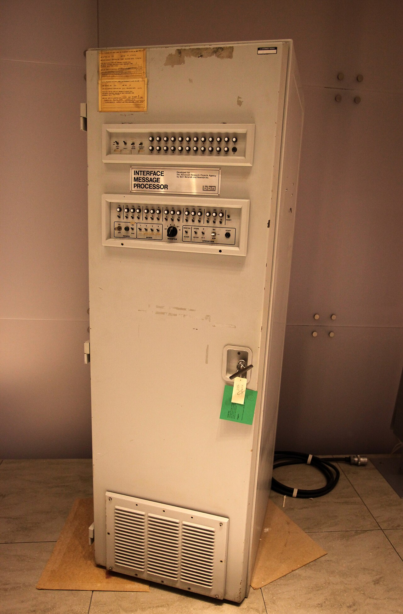
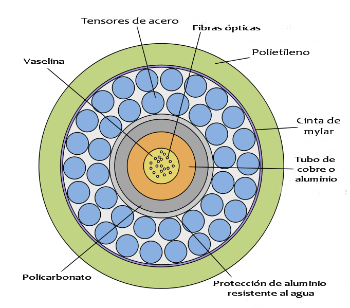
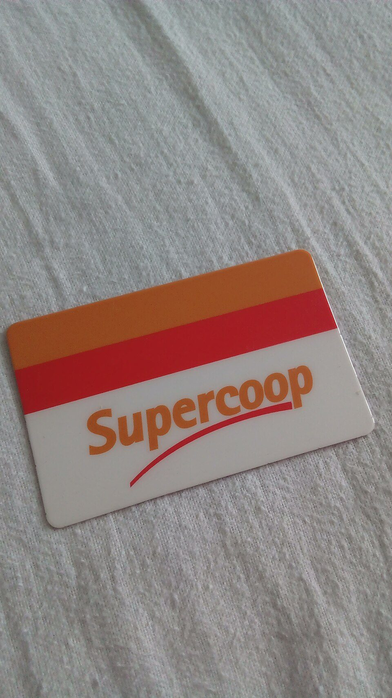
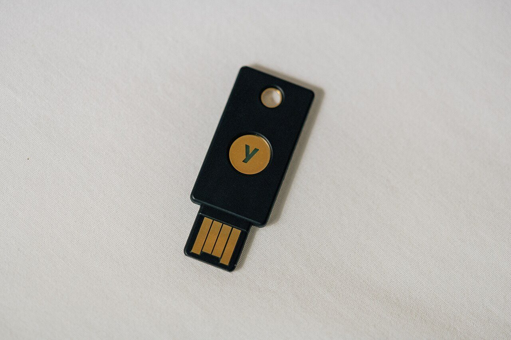
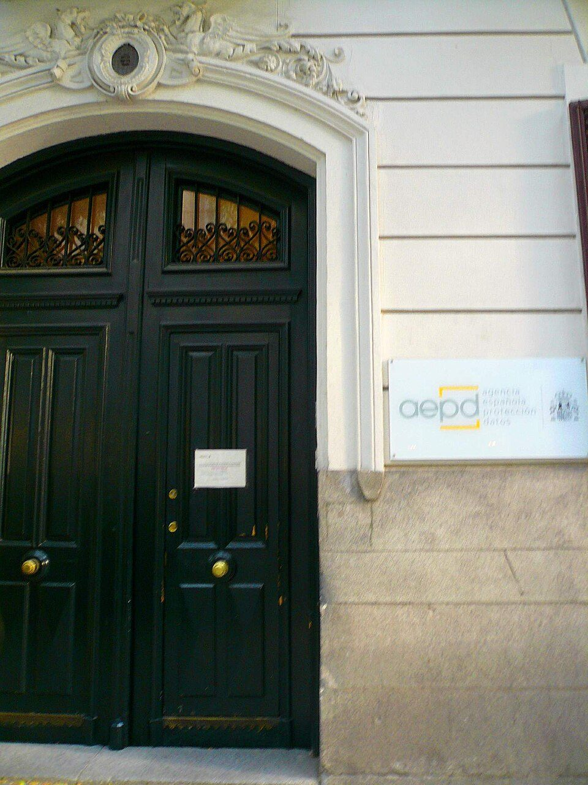

Cómo llega un vídeo a tu móvil
Reservar un camino de punta a punta no cabe en la aritmética. La salida fue partirlo todo en trozos numerados y dejar que cada uno se busque la vida.
De la unidad del ordenador te llevaste una máquina que sabe hacer una sola cosa muy bien: buscar una instrucción, obedecerla y volver a empezar. Una máquina sola, encima de una mesa, con sus ceros y sus unos guardados dentro.
Coges el móvil, le das a un vídeo y el vídeo aparece. Y el vídeo no estaba dentro.
De dónde sale esta unidad
Una máquina sola ya la tienes; ahora hay millones y están conectadasVoz sintetizada sobre guión propio. La boca sigue el volumen real de la voz: se mueve cuando habla y se para en los silencios.
Casi todo el mundo dibuja lo mismo, y es una idea razonable: una línea reservada desde el sitio donde está el vídeo hasta tu móvil, y el vídeo pasando por ella de una pieza. No es una tontería: el teléfono funcionó exactamente así durante cien años, y había alguien enchufando el cable a mano.
Vamos a romperla con tres cuentas. Házlas tú, no las leas:
1. El vídeo ocupa 500 MB y la línea mueve 50 megabits por segundo. Como un byte son 8 bits, son 4.000 megabits: 80 segundos con la línea entera para ti solo. ¿Cuántas personas pueden ver un vídeo a la vez por esa línea?
2. En un instituto de 600 personas, para que cualquiera pueda hablar con cualquiera hacen falta cables uno a uno. Son 600 × 599 ÷ 2 = 179.700 cables. Ahora repite la cuenta con los 5.500 millones de personas que, aproximadamente, usan hoy Internet.
3. Si a mitad de envío una excavadora corta el cable, ¿cuánto del vídeo se ha salvado?
Las tres respuestas van en la misma dirección. Una sola persona por línea; un número de cables que no cabe ni escrito; y si se corta, vuelta a empezar desde cero. La idea de reservar un camino no se puede arreglar: hay que tirarla.
Y lo que la sustituye es casi lo contrario: no reservar nada. Partir lo que quieras mandar en trozos, numerarlos, ponerle a cada uno la dirección de destino y soltarlos a la red para que se busquen la vida. Suena a desastre. Funciona.
Internet no manda el vídeo: manda trozos numerados
Prueba la red de abajo. Pide el vídeo y, mientras los paquetes van de camino, corta un cable pulsando encima. Fíjate en dos cosas: en qué pasa con el paquete que iba justo por ahí, y en el orden en el que llegan los seis.
Paquetes
Paquete: cada uno de los trozos en que se parte lo que se manda por Internet. Además de su trozo de datos, lleva escrito de dónde viene, a dónde va y qué número de trozo es.
Consecuencias, y son las tres que hay que entender:
- Los paquetes de una misma cosa pueden ir por caminos distintos.
- Pueden llegar desordenados, y da igual: el destino los coloca por su número.
- Si falta uno, el destino lo nota (falta un número) y lo vuelve a pedir. No hay que repetir el envío entero.
El mismo cable lo usan a la vez miles de conversaciones, porque nadie lo tiene reservado: los paquetes de unos y de otros van entremezclados.
Para llegar hace falta una dirección
Un paquete sin dirección de destino es un sobre sin nada escrito. Por eso cada máquina conectada a la red tiene un número que la identifica.
Dirección IP
Dirección IP: el número que identifica a una máquina dentro de la red. La clásica se escribe en cuatro trozos de 0 a 255, como 192.0.2.41.
Con ese formato hay 232 = 4.294.967.296 direcciones distintas: unos 4.300 millones. Compara con los 8.000 millones de personas que hay en el mundo, y ten en cuenta que muchas tienen móvil, ordenador, consola y televisión. No llegan.
Por eso existe el formato nuevo, IPv6, con 2128 direcciones: un 34 seguido de 37 cifras más. No se van a acabar.
Quién decide por dónde va cada paquete
En la escena, los paquetes elegían camino solos. No es magia: en cada cruce hay una máquina que mira la dirección de destino y decide por dónde sale.
Router
Router (encaminador): máquina que recibe paquetes, mira la dirección de destino de cada uno y lo manda por el mejor camino que conoce en ese momento.
Dos cosas que no son obvias:
- No elige el camino más corto en kilómetros, sino el que tarda menos, que depende de por dónde va el cable y de cuánta gente lo esté usando.
- Si un camino se cae, recalcula. Nadie tiene que arreglarlo a mano: por eso la red sigue funcionando aunque se rompan trozos.
El router de tu casa hace esto mismo, en pequeño, entre tus aparatos y la calle.

Y los nombres: la agenda
Tú no escribes 192.0.2.41 en el navegador. Escribes un nombre. Pero la red solo sabe ir a un número, así que alguien tiene que traducir, y eso ocurre antes de que empiece a llegar nada.
DNS y caché
DNS (sistema de nombres de dominio): la agenda de Internet. Traduce un nombre (aula.example.es) en una dirección IP (192.0.2.41).
No hay una lista gigante en un sitio: está repartida. Se pregunta a quien lleva los .es, ese dice quién lleva example.es, y ese da el número.
Caché: guardar un rato una respuesta que acabas de recibir, para no tener que volver a pedirla. Es lo que hace que la segunda visita a un sitio empiece antes.
Trocear los mensajes se le ocurrió a dos personas por separado y casi a la vez: Paul Baran en Estados Unidos (1964) y Donald Davies en el Reino Unido (1965), que fue quien los llamó packets, paquetes. Baran buscaba una red que siguiera funcionando con trozos rotos, y esa es justo la propiedad que probaste cortando cables en la escena.
La primera red que lo hizo de verdad, ARPANET, mandó su primer mensaje el 29 de octubre de 1969, entre dos ordenadores de California: uno en la Universidad de Los Ángeles y otro en un centro de investigación a 600 km. Iban a escribir LOGIN. Se escribió la L, se escribió la O, y el sistema se cayó. El primer mensaje de Internet fue «LO».
Una distinción que casi nadie hace: Internet no es la web. Internet es la red que mueve paquetes, y es de 1969. La web es una cosa que funciona encima de ella —páginas enlazadas entre sí—, y la inventó Tim Berners-Lee en el CERN en 1989, veinte años después. El correo, los juegos en red o las videollamadas tampoco son la web: van por Internet, por su cuenta.
Lo único que no se puede acelerar
Por los cables submarinos la señal va en pulsos de luz dentro de una fibra de vidrio, a unos 200.000 km/s. De Madrid a Nueva York hay unos 5.800 km en línea recta, así que la luz tarda 29 milisegundos en llegar —y otros 29 en volver la respuesta—. Eso no lo puede mejorar nadie: ni un cable mejor ni un router más caro. Es física.

Para ver por dónde va físicamente eso que llamamos «la nube»: barcos, cables y mapas. El vídeo no se carga hasta que lo pulsas, y se reproduce sin cookies de seguimiento. Si la red del centro bloquea YouTube, ábrelo directamente aquí. El vídeo es de su autor y no forma parte del material publicado bajo la licencia de esta página.
Qué hay que hacer
- Los cables que no caben. Calculad cuántos cables uno a uno hacen falta para 5, para 10 y para 600 personas (la fórmula es n × (n − 1) ÷ 2). Escribid después una frase: si al pasar de 10 a 600 personas los cables se multiplican por tanto, ¿qué pasaría con 5.500 millones?
- El troceo. Un vídeo de 500 MB (500.000.000 de bytes) se parte en paquetes.
Cada paquete lleva 1.500 bytes en total, de los cuales 40 son de
«sobre» (de dónde viene, a dónde va, qué número es) y el
resto, vídeo. Calculad:
- cuántos bytes de vídeo lleva cada paquete;
- cuántos paquetes hacen falta;
- cuántos bytes se van en sobres y qué porcentaje del total son.
- El camino. Con el mapa de la escena y estos costes —SERV-R1: 3 · SERV-R2: 5 · R1-R3: 5 · R1-R4: 4 · R2-R4: 4 · R2-R5: 5 · R3-R4: 3 · R4-R5: 3 · R3-R6: 6 · R4-R6: 5 · R4-R7: 7 · R5-R7: 5 · R6-MÓVIL: 3 · R7-MÓVIL: 3—, encontrad a mano el camino más rápido y su tiempo. Después cortad R4-R6 y volved a hacerlo. Comprobadlo luego en la escena.
- La traza. Escribid, numerados y en orden, todos los pasos que ocurren desde que escribes un nombre en el navegador hasta que ves el primer trozo de vídeo. Tienen que aparecer: el nombre, el DNS, la dirección IP, los paquetes, los routers y la recomposición.
- El límite físico. La luz va por la fibra a 200.000 km/s. Calculad cuánto tarda en recorrer 5.800 km (Madrid–Nueva York) y cuánto tarda la ida y la vuelta. Contestad: si pagas una conexión el doble de rápida, ¿baja ese tiempo? ¿Por qué?
Cómo se evalúa
- Las tres cuentas de cables están bien y la frase final entiende lo que significan (2 puntos).
- El troceo está completo, con el porcentaje y las unidades puestas (2 puntos).
- Los dos caminos son correctos y coinciden con lo que hace la escena (2 puntos).
- La traza tiene los seis elementos en el orden correcto (2 puntos).
- El tiempo de la luz está bien y la respuesta del «por qué» distingue velocidad de retardo (2 puntos).
Vuelve al dibujo del principio. Aquella línea reservada ya no está: lo que hay es un montón de trozos numerados compartiendo cables con los de todo el mundo.
- ¿Por qué no se reserva un camino entero para cada conversación, como hacía el teléfono antiguo?
Ver respuesta
Porque no cabe. Harían falta tantos caminos como parejas posibles de usuarios, y cada uno quedaría reservado aunque no se usara. Compartiendo los cables entre paquetes de todo el mundo, la misma red sirve para muchísimas más conversaciones a la vez.
- Los paquetes de un vídeo llegan en el orden 1, 4, 2, 3. ¿Se ve mal el vídeo?
Ver respuesta
No. Cada paquete lleva escrito su número, así que el destino los coloca en su sitio antes de enseñar nada. Y si uno no llega, se nota enseguida —falta un número— y se vuelve a pedir solo ese.
- Escribes un nombre en el navegador. ¿Qué pasa antes de que empiece a llegar la página?
Ver respuesta
Hay que traducir el nombre en un número, porque la red solo sabe ir a números. De eso se encarga el DNS. Si nadie tenía guardada la respuesta, hay que preguntarla en varios sitios, y eso tarda unas décimas de segundo antes de que empiece lo demás.
Lectura del tema
Una sesión entera dedicada a leer y contestar. 30 párrafos numerados: cada uno lee el suyo en voz alta, en orden. Después, diez preguntas por escrito.
Quién ve lo que mandas: el candado por dentro
Tus paquetes pasan por diez máquinas que no son tuyas. De ahí salió la necesidad de cifrar, y de ahí sale lo que el candado protege —y lo que no—.
Lo dejamos en una pregunta: tus paquetes pasan por máquinas de otros. El router del instituto, el de tu operador, unos cuantos por el camino, y a veces un cable que cruza el Atlántico. Todos ellos tienen que leer la dirección de destino para saber por dónde mandarlo; la pregunta es qué más pueden leer.
La idea que sale siempre es un código: cambiar cada letra por otra. La versión más sencilla es correr el abecedario unas cuantas posiciones, y tiene 2.000 años: la usaba Julio César. Aquí va un mensaje cifrado así. Descifradlo, sin ayuda, y cronometrad cuánto os cuesta:
HO HADPHQ HV HO YLHUQHV
Pista, si hace falta: prueba a correr cada letra una posición hacia atrás. Si no sale, prueba dos. Si no, tres…
Sale en un par de minutos, y esa es justo la mala noticia. Hagamos la cuenta que lo explica: el abecedario que se usa para esto tiene 26 letras, así que hay 26 maneras de correrlo, y una de ellas es dejarlo igual. Veinticinco pruebas. Un secreto que se acaba probando entero no es un secreto: es un rato de espera.
Y hay un problema todavía peor, que no es de matemáticas. Imagina que el secreto es el método —«corremos el abecedario»—. El día que uno solo de los que lo usan se va de la lengua, hay que cambiárselo a todo el mundo a la vez. Y si el sistema lo usan mil millones de personas, eso no se puede hacer.
Si el método no puede ser secreto, porque es imposible mantenerlo escondido, ¿qué parte tiene que serlo?
Lo público y lo secreto
La respuesta la escribió un profesor holandés de idiomas, Auguste Kerckhoffs, en un artículo sobre criptografía militar de 1883, y desde entonces no ha cambiado: el método tiene que poder ser público, y lo único secreto tiene que ser la clave. Así, si se te escapa la clave, cambias la clave y ya está; no hay que reinventar nada.
Cifrar
Cifrar: transformar un mensaje con una clave, de manera que sin esa clave no se pueda volver a leer. Descifrar es deshacerlo.
La regla que aguanta desde 1883: el método es público, la clave es secreta. Los sistemas que se usan hoy están publicados enteros, para que cualquiera intente romperlos: el que sobrevive a eso es el que se usa.
Lo que hace fuerte a una clave es cuántas hay. Con el código de César hay 25 claves útiles. Con las de hoy hay 2128, un 3 seguido de 38 cifras.
Qué ve exactamente el que está en medio
Aquí entra el candado. En la escena de abajo escribe un usuario y una contraseña —inventados, no los tuyos— y ve pulsando cada salto del camino con http y con https. Mira sobre todo los dos extremos.
http y https
http: la manera de pedir páginas sin cifrar. Lo que mandas viaja tal cual, y cualquiera de los saltos del camino puede leerlo y cambiarlo.
https: lo mismo, pero cifrado de extremo a extremo del camino. Es lo que significa el candado del navegador.
El candado dice tres cosas, y solo tres:
- Nadie del camino puede leer lo que mandas.
- Nadie del camino puede cambiarlo sin que se note.
- Estás hablando con el dueño de ese dominio, y no con otro que se hace pasar por él.
Lo que el candado NO dice
- No dice que la web sea honrada. Una tienda falsa puede tener candado: el candado certifica quién es, no si es de fiar.
- No esconde a qué sitio te conectas. El de en medio suele ver el nombre del dominio, cuándo entras y cuánto ocupa lo que te bajas; lo que no ve es el contenido.
- No protege los extremos. En tu móvil y en el servidor, el texto está claro: tiene que estarlo, o no se podría usar.
El problema gordo: ponerse de acuerdo en la clave
Si el candado cifra con una clave, tú y la web tenéis que tener la misma. Pero no os habéis visto nunca, no hay manera de quedáis antes, y todo lo que os digáis va a pasar por esas diez máquinas de otros. Parece imposible: cualquier cosa que mandes para acordar la clave la oye el de en medio.
Pues se puede. Mira los números de abajo y cambia los secretos con los botones.
Acordar una clave a la vista de todos
Cada uno elige un número secreto que no enseña a nadie, hace una cuenta con él y manda el resultado. Con el resultado del otro y su propio secreto, los dos llegan al mismo número final, que será la clave.
Quien lo ha visto todo tiene los números públicos, pero no los secretos, y deshacer esa cuenta hacia atrás es lo que no sabe hacer nadie en un tiempo razonable.
Esto lo hace tu navegador, solo y en menos de un segundo, con cada web antes de empezar. Y una clave distinta cada vez.
El ejemplo más caro de la historia de guardar el método en vez de la clave es la máquina de la foto. La Enigma cifraba con unos rotores que se colocaban cada día en una posición distinta: la posición era la clave, y la máquina, el método. El ejército alemán creía que el método era secreto; no lo era, porque se capturaron máquinas, y a partir de ahí el trabajo de matemáticos polacos y después británicos consiguió leer mensajes durante años.
Lo que se aprendió no fue «hay que esconder mejor la máquina». Fue justo lo contrario, y es lo que hacemos ahora: publicar el método entero, que lo ataque todo el mundo durante años, y si sobrevive, usarlo. Un sistema que solo aguanta mientras nadie sabe cómo funciona no aguanta nada.
La wifi abierta: por qué era un problema y por qué lo sigue siendo a medias
En una wifi abierta, cualquiera que esté cerca puede recoger lo que pasa por el aire. Hace quince años eso era gordo: casi toda la web iba en http, o sea, en texto claro. Conectarse a la wifi de una cafetería y entrar en tu correo era mandar la contraseña escrita delante de quien quisiera mirar.
Hoy casi todo va en https, y ese problema concreto está resuelto. Lo que queda:
Qué pasa hoy en una wifi abierta
- Ya no se lee lo que mandas a sitios con candado.
- Sí se ve a dónde vas: qué sitios visitas, cuándo y cuánto tiempo. Eso también dice mucho de una persona.
- Quien monta la red puede enseñarte una página suya pidiéndote que instales algo o que aceptes un aviso raro. Ahí ya no te protege el cifrado: te protege que no aceptes.
Regla práctica: en una red que no conoces, mirar cosas sí; instalar nada y saltarse un aviso de seguridad, nunca.
La versión oficial y corta de lo mismo, del organismo público español de ciberseguridad. El vídeo no se carga hasta que lo pulsas, y se reproduce sin cookies de seguimiento. Si la red del centro bloquea YouTube, ábrelo directamente aquí. El vídeo es de su autor y no forma parte del material publicado bajo la licencia de esta página.
Qué hay que hacer
- Cifrar y descifrar. Escribid una frase corta y cifradla corriendo el abecedario cinco posiciones. Intercambiadla con otra pareja sin decirles el número y cronometrad cuánto tardan en leerla. Anotad el tiempo: es la medida de lo que vale ese sistema.
- Cuántas claves hay. Rellenad la tabla suponiendo una máquina que prueba
mil millones de claves por segundo:
- César: 25 claves. ¿Cuánto tarda?
- Una clave antigua de 56 bits: 256 = 72.000.000.000.000.000 (setenta y dos mil billones). ¿Cuántos años?
- Una de hoy, de 128 bits: 2128, que es 272 veces la anterior, o sea un 47 seguido de 20 ceros de veces más. Con decir el orden de magnitud basta: no hace falta el número exacto.
- A mirar de verdad. Abrid tres páginas que uséis (la del instituto, una de noticias y una tienda). De cada una anotad: ¿empieza por https? Pulsando el candado, ¿a nombre de quién está el certificado y quién lo ha emitido?
- El caso de la wifi del centro comercial. Estás conectado a una wifi abierta.
Decid, y justificad con lo de hoy, qué puede saber quien controle esa red en
cada caso:
- miras un vídeo en una web con candado;
- entras en una tienda con candado y compras algo;
- visitas seis páginas distintas en media hora.
- La trampa. Te llega un mensaje con un enlace a notas-instituto.ejemplo-alumnos.com. La página tiene candado, es clavada a la del centro y te pide tu usuario y tu contraseña. Contestad: ¿el candado garantiza que sea la buena? ¿Qué hay que mirar, y qué haríais?
Cómo se evalúa
- El cifrado y el descifrado están bien hechos, con el tiempo anotado (2 puntos).
- Los cálculos de la tabla están bien y la frase del bit se entiende (2 puntos).
- Las tres páginas están comprobadas de verdad, con lo que dice cada certificado (2 puntos).
- Los tres casos de la wifi distinguen contenido de destino (2 puntos).
- La respuesta de la trampa dice que hay que mirar el dominio y no el candado (2 puntos).
- ¿Por qué el método de cifrado se publica, en vez de guardarlo en secreto?
Ver respuesta
Porque un secreto que tiene que saber mucha gente no se aguanta, y el día que se escapa hay que cambiárselo a todo el mundo a la vez. Publicando el método, lo único secreto es la clave: si se escapa una clave, se cambia esa y ya. Además, un método publicado lo puede intentar romper todo el mundo, y el que sobrevive es de fiar.
- Estás en una wifi abierta y entras en una web con candado. ¿Qué puede saber quien controle esa wifi?
Ver respuesta
Puede saber a qué sitio te has conectado, cuándo y cuánto ocupa lo que has movido. No puede saber qué le has dicho ni qué te ha contestado. El candado protege el contenido, no el destino.
- Una página que te pide la contraseña tiene candado. ¿Es de fiar?
Ver respuesta
No necesariamente. El candado solo certifica que estás hablando con el dueño de ese dominio, sin que nadie escuche por el camino. Si el dominio es falso, el candado también protege perfectamente… la conversación con el falso. Lo que hay que mirar es el nombre del dominio.
Tus datos valen dinero: qué se recoge y a cambio de qué
Si nadie puede leer lo que mandas, ¿de dónde sale lo que saben? De lo que entregamos al usar, y de que el aparato se identifica solo. Con la cuenta delante.
Piensa en la aplicación que más usas. Ahora contesta a tres preguntas, en este orden:
- ¿Cuánto has pagado por ella? Nada.
- ¿Cuánta gente trabaja en la empresa que la hace? Decenas de miles de personas.
- ¿De dónde sale ese dinero?
Antes de comparar respuestas, una cuenta con números públicos. Los de la empresa que tiene Instagram y WhatsApp, publicados por ella misma en enero de 2026:
Ingresó 200.966 millones de dólares en 2025, casi todos de publicidad. Usan sus aplicaciones 3.580 millones de personas al día.
¿Cuánto dinero le dejó de media cada persona en un año? ¿Y al mes?
Salen unos 56 dólares al año, menos de 5 al mes. Ahí está lo interesante: por ti, suelto, pagan poco más que un bocadillo. Lo que vale una fortuna es la suma —3.580 millones de personas— y, sobre todo, saber a quién se le enseña cada anuncio. Un cartel en la calle lo ve todo el mundo; un anuncio ahí lo ve exactamente quien interesa.
Para eso hay que saber cosas de cada uno. Pero en la sesión anterior vimos que nadie puede leer lo que mandas por el camino. ¿De dónde sale entonces lo que saben?
De dos sitios, y ninguno es el de las películas. El primero: se lo damos nosotros al usar el servicio —lo que miras, cuánto rato, a quién sigues, dónde estás, qué escribes y qué borras sin enviar—. El segundo: el aparato se identifica solo, sin que nadie le pregunte. Vamos a ver el segundo, que es el que casi nadie conoce.
Tu navegador habla más de la cuenta
Para enseñarte una página bien, tu navegador tiene que contar cosas: qué tamaño tiene la pantalla, en qué idioma la quieres, qué sistema llevas. Cada dato por separado no dice nada. Juntos, sí.
La escena de abajo no es un ejemplo inventado: son tus datos, leídos ahora mismo en el aparato desde el que estás mirando esto.
Huella digital
Huella digital (o fingerprinting): reconocer un aparato por la combinación de datos que da su navegador, sin guardarle nada dentro.
Funciona por la misma razón que reconoces a alguien de espaldas: ningún rasgo suelto es raro, pero la combinación de todos casi no se repite.
Lo importante: no se borra. Puedes borrar las cookies, cambiar de modo incógnito o reiniciar el móvil, y la huella sigue siendo la misma, porque no es algo que te hayan puesto: es cómo es tu aparato.
Cookies y permisos
Cookie: un dato pequeño que una web guarda dentro de tu navegador y que le vuelve a llegar cada vez que entras. Sirve para reconocerte.
- Cookies propias: las pone la web en la que estás. Muchas hacen falta de verdad —mantener la sesión abierta, acordarse del idioma, el carrito de la compra—.
- Cookies de terceros: las pone otra empresa a través de esa web, y como está en muchas webs a la vez, puede ir juntando por dónde pasas.
Permiso: lo que una aplicación te pide para llegar a algo del móvil —cámara, micrófono, ubicación, contactos, fotos—. Se concede una vez y sigue concedido hasta que lo quitas.
Qué se saca de un permiso, en números
«Ubicación» suena a que alguien sabe dónde estás ahora. Es bastante más que eso, y se ve haciendo la cuenta.
La cuenta de la ubicación
Una aplicación con permiso de ubicación en segundo plano puede apuntar dónde estás cada 5 minutos:
- 60 ÷ 5 = 12 puntos por hora
- 12 × 24 = 288 puntos al día
- 288 × 30 = 8.640 puntos al mes
Con los puntos de 0:00 a 6:00 sale dónde duermes. Con los de 8:00 a 15:00, a qué centro vas. Con los del fin de semana, a qué te dedicas y con quién. Nadie ha leído nada tuyo: solo ha sumado puntos en un mapa.
El trueque, que no es nuevo
Esto no lo inventó Internet. Lo inventó el comercio, y el contrato siempre ha sido el mismo: te doy algo a cambio de saber de ti.

Cuando recoger datos pasó a costar casi nada, hizo falta una ley, y la hay. El Reglamento General de Protección de Datos es europeo, se aprobó en 2016 y se aplica desde el 25 de mayo de 2018 en los veintisiete países. Dice cosas muy concretas:
- Tienen que pedirte permiso, y no vale esconderlo en cuarenta páginas.
- Tienen que decirte para qué, y no pueden usarlo para otra cosa.
- Puedes pedir ver lo que tienen tuyo, corregirlo y que lo borren.
- Si hay una fuga, tienen que avisártelo.
De ahí salen los avisos de cookies que te encuentras en todas partes. Están mal hechos a propósito muchas veces —el botón de aceptar gordo y el de rechazar escondido—, y eso también lo prohíbe la ley; multar a todo el mundo es otra historia. En España, quien se encarga es la Agencia Española de Protección de Datos, y se le puede reclamar gratis.
Un minuto, para fijar la diferencia entre la cookie que hace falta y la que te sigue. El vídeo no se carga hasta que lo pulsas, y se reproduce sin cookies de seguimiento. Si la red del centro bloquea YouTube, ábrelo directamente aquí. El vídeo es de su autor y no forma parte del material publicado bajo la licencia de esta página.
Qué hay que hacer
- Cuenta. En Ajustes → Privacidad (o Aplicaciones → Permisos), anota cuántas aplicaciones tienen concedido cada permiso: ubicación, micrófono, cámara, contactos y fotos. Una tabla de cinco filas.
- Juzga tres. Elige tres aplicaciones que te hayan sorprendido y contesta, para cada una: ¿necesita ese permiso para hacer lo que hace? Si crees que sí, explica para qué. Si crees que no, dilo y quítaselo ahí mismo.
- La cuenta de los puntos. Rehaz la cuenta de la ubicación con los datos de clase y escribe tres cosas concretas que se pueden deducir de tus 8.640 puntos de un mes. Que sean cosas que tú podrías deducir de los puntos de otra persona.
- Tu huella. En la escena de arriba, anota cuántos bits te salen y cuánta gente comparte tu combinación. Compáralo con el de al lado: ¿os sale lo mismo? ¿Qué rasgo os diferencia? Y una pregunta que hay que razonar: si los dos tenéis el mismo modelo de móvil, ¿tenéis la misma huella?
- El dinero. Con los dos números del principio de la sesión, calcula lo que ingresa esa empresa por persona y año y por persona y día. Y contesta: si por cada uno ganan tan poco, ¿por qué se pelean tanto por tenerte un rato más?
- Una decisión. Escribe una sola frase: algo que hayas decidido cambiar —o no cambiar— después de esto, y por qué. Vale perfectamente «no voy a cambiar nada, porque me compensa» si va razonado.
Cómo se evalúa
- La tabla de permisos está hecha sobre el aparato de verdad (2 puntos).
- Las tres aplicaciones están razonadas, no solo listadas (2 puntos).
- Las tres deducciones de la ubicación son concretas y posibles (2 puntos).
- La comparación de huellas está hecha y la pregunta del mismo modelo está bien razonada (2 puntos).
- Las dos divisiones están bien y la frase final está justificada (2 puntos).
- Si con https nadie puede leer lo que mandas, ¿cómo saben tanto de ti?
Ver respuesta
Porque no hace falta leer nada por el camino. Una parte se la damos nosotros al usar el servicio: lo que miramos, cuánto rato, dónde estamos, qué permisos concedemos. Y otra parte la da el aparato solo, con su huella y con las cookies. El cifrado protege el camino; no protege lo que entregas al llegar.
- ¿Qué diferencia hay entre una cookie y la huella digital?
Ver respuesta
La cookie es algo que te ponen dentro del navegador, así que se puede ver y borrar. La huella no te la pone nadie: es la combinación de cómo es tu aparato, y por eso sigue ahí aunque borres todo. Una es una pegatina; la otra, reconocerte por la cara.
- Una aplicación de linterna te pide permiso de ubicación. ¿Qué piensas?
Ver respuesta
Que una linterna es una bombilla: no necesita saber dónde estás para encenderse. Cuando un permiso no le hace falta a la aplicación para funcionar, lo normal es que lo pida para otra cosa, y esa otra cosa suele ser venderlo. Se le quita y se comprueba si sigue funcionando: casi siempre, sí.
La contraseña: por qué la larga gana a la rara
La receta de siempre —mayúsculas, números y un signo raro— pierde contra una frase fácil de recordar. Y se demuestra con una multiplicación.
De la sesión anterior te llevas una idea incómoda: casi todo lo que saben de ti se lo damos nosotros. Pero hay una parte que no se da. Tus mensajes, tus notas, las fotos que no has publicado. Eso está detrás de una puerta, y esa puerta la cierra una palabra.
Sobre cómo tiene que ser esa palabra te han dado mil veces la misma receta: mayúsculas, números y algún signo raro. Vamos a comprobarla, que es distinto de creérsela.
B) tres cabras en el tejado
Casi toda la clase elige la A, y con motivo: es la que parece difícil. La B se lee de un vistazo, no tiene un solo número y parece una tontería. Hagamos la cuenta, que para eso está.
1. En la A hay 8 sitios y en cada uno puede ir una letra (52, contando mayúsculas), un número (10) o un signo (unos 32): 94 cosas. Son 94 × 94 × … ocho veces: 948. Hazlo por pasos, que así cabe en cualquier calculadora: 942 = 8.836; ese al cuadrado, 944 = 78.074.896; y ese al cuadrado, 948 = 6.095.689.385.410.816. Cuenta las cifras: 16.
2. En la B hay 24 sitios, y en cada uno solo cabe una minúscula o un espacio: 27 cosas. Son 2724, y ese sí se sale de la calculadora. Te lo damos hecho: es un 2 seguido de 34 cifras.
3. Con las cifras de cada uno, contesta: ¿cuántas veces más grande es el montón de la B?
La B no gana por poco: gana por un 1 seguido de dieciocho ceros de veces. Un trillón. Y es la que parecía de broma.
El motivo es que las dos cosas que le puedes hacer a una contraseña no valen igual:
- Hacerla rara agranda el alfabeto: pasas de 26 letras a 94 teclas. Eso multiplica el montón una sola vez.
- Hacerla larga añade sitios. Y cada sitio nuevo vuelve a multiplicar por el alfabeto entero.
Partimos de ocho minúsculas: 268 = 208.827.064.576.
· Si la llenas de mayúsculas, números y signos → 948. Has multiplicado el montón por 29.190.
· Si la dejas en minúsculas y le añades cuatro letras más → 2612. Has multiplicado por 456.976.
Cuatro letras de nada valen quince veces más que llenarla de símbolos. Y las cuatro letras te las acuerdas.
Lo que hace fuerte a una contraseña es el montón
Escribe abajo lo que quieras y mira los números. Prueba primero algo corto y raro, después algo largo y fácil, y fíjate en las cuatro cajas del medio: son la misma contraseña con un carácter más cada vez.
El montón
Una contraseña es fuerte cuando es una de un montón enorme. El montón se calcula así:
combinaciones = alfabeto longitud
- Alfabeto: cuántas cosas distintas pueden ir en cada sitio (26 si solo hay minúsculas, 62 con mayúsculas y números, unas 94 con todo).
- Longitud: cuántos sitios hay.
La consecuencia, que es toda la sesión en una línea: añadir un carácter multiplica el montón por el alfabeto entero; hacerla rara solo agranda el alfabeto, y una sola vez.
Por eso larga gana a rara. Y hay un premio de regalo: una contraseña larga y fácil te la acuerdas, y la que te acuerdas es la que no acabas apuntada en un papel ni repetida en diez sitios.
Pero esa cuenta solo vale si es al azar
El montón de arriba supone que todas las combinaciones son igual de probables. Con tu nombre, tu equipo, tu año de nacimiento, el nombre de tu perro o la frase de una canción, eso deja de ser verdad: quien prueba no empieza por aaaaaaaa, empieza por ahí.
Por eso en la escena Pelusa2012 sale con la barra larga y va marcada en rojo: la cuenta dice que es grande, y la realidad dice que no, porque no es al azar.
La regla que sobrevive: larga, y que no salga de ningún sitio. Ni de tu vida ni de un libro.
Entonces, ¿cómo se pierden las contraseñas?
Aquí hay algo que no cuadra. Si el montón es tan gordo que no se acaba nunca, nadie debería entrar en ninguna cuenta jamás. Y sin embargo pasa todos los días. ¿Por dónde?
No por tu puerta: por la del otro lado. Las contraseñas casi nunca se adivinan una a una —eso es lo que acabas de ver que no sale a cuenta—: se escapan de las webs, a millones y de golpe. Así que la pregunta que importa es otra: cuando te registras, ¿qué guarda exactamente esa web?
La respuesta ingenua es «mi contraseña, en una lista». Si fuera eso, el día que alguien se llevara la lista tendría las de todo el mundo y no habría nada que hacer. Por eso una web bien hecha no guarda tu contraseña. Escribe una abajo y mira lo que guarda de verdad.
Huella (o hash)
Huella: el resultado de pasar un texto por una cuenta que siempre da el mismo número de cifras y que no se puede deshacer.
Tiene tres propiedades, y son justo las tres que hacen falta:
- Del mismo texto sale siempre la misma huella.
- De un texto parecido sale una huella completamente distinta.
- De la huella no se puede volver al texto.
Por eso una web bien hecha no sabe cuál es tu contraseña. Cuando entras, calcula la huella de lo que escribes y la compara con la que tiene guardada. Si coinciden, te abre.
Y de ahí sale una señal que puedes usar hoy mismo: si se te olvida la contraseña y una web te la manda por correo tal cual, es que la tenía guardada en claro. Una bien hecha no puede: solo puede darte una nueva.
La sal
Sal: un trozo de texto al azar que la web le pega delante a tu contraseña antes de calcular la huella. Cada usuario lleva la suya.
No es secreta —está guardada al lado— y no sirve para esconder nada. Sirve para que dos personas con la misma contraseña no tengan la misma huella, y así una lista robada no se pueda cruzar con otra. Pruébalo en la escena: pulsa «con sal» y mira cómo las dos líneas dejan de coincidir.
Hay un detalle que parece un error y no lo es: las cuentas que se usan para guardar contraseñas están hechas a propósito para ir lentas. En cualquier otro sitio de la informática se pelea por ir rápido; aquí, al revés. La razón es la escena de antes: tú entras una vez y no notas si tarda dos décimas, pero quien tenga una lista robada tiene que probar millones, y esas dos décimas le multiplican el trabajo por un millón.
Eso explica los tres ritmos de la escena de arriba. El del medio y el de la derecha son la misma lista robada: lo único que cambia es si la web hizo bien los deberes. Con las contraseñas cortas y comunes da igual lo que hiciera, porque esas se encuentran igual; con una larga, no se encuentra ninguna de las dos maneras. Por eso la longitud te protege incluso de los errores de otro.
El problema de verdad no es esa contraseña: es repetirla
Y aquí llega el sitio donde de verdad se pierde todo. Piensa en cuántas cuentas tienes —el correo, el instituto, dos o tres juegos, la tienda de zapatillas, el foro aquel que abriste una vez—. Ahora piensa en cuántas comparten contraseña.
Repetirla
Si pones la misma contraseña en varios sitios, su fuerza ya no la decides tú: la decide la web peor hecha de todas aquellas en las que la has puesto. Ese foro que abriste una vez y del que no te acuerdas.
Porque el día que a esa web se le escape la lista, lo que se escapa no es una puerta: son todas las que abre esa llave. Y como el usuario suele ser tu correo, ni siquiera hay que averiguar dónde probarla.
De todas, hay una que no es una puerta más: la del correo. Con el correo se recuperan casi todas las demás, así que quien entra ahí entra en todo lo demás sin saber ninguna otra contraseña. Esa va distinta de todas, larga, y con segundo factor.
Si tienen que ser largas y distintas, no caben en la cabeza
Y es verdad: no caben. Cuarenta contraseñas largas y distintas no se acuerda nadie. Esa es exactamente la razón de que exista la herramienta siguiente, y no al revés.
Gestor de contraseñas
Gestor de contraseñas: un programa que inventa una contraseña larga y al azar para cada sitio, las guarda cifradas y las escribe por ti cuando entras.
Te deja tener que acordarte de una sola: la que abre el gestor. Esa sí tiene que ser larga, tuya y que no salga de ningún sitio.
Y hace una cosa que se cuenta poco y vale mucho: no escribe la contraseña en una web que no sea la buena. Él mira el dominio, y el dominio no lo engaña una página clavada a la del instituto. Tú sí te puedes distraer; él no.
Los navegadores llevan uno dentro, y hay programas libres que valen para todo. Gratis, los dos.
La objeción salta sola, y es buena: «¿y si me roban el gestor? Lo pierdo todo de golpe». Es verdad que pone los huevos en una cesta. La respuesta tiene dos partes.
La primera: lo que hay dentro está cifrado con tu contraseña maestra, y quien se lleve el fichero se lleva ruido —la escena del candado, otra vez—. La segunda, y es la que decide: lo que haces si no lo usas tampoco es seguro. Es repetir la misma en veinte sitios, y eso ya sabes lo que vale. No se compara el gestor con lo ideal; se compara con lo que hay.
Y por si acaso: una segunda cerradura
Todo lo anterior protege la contraseña. Pero una contraseña se puede perder de maneras que no dependen de lo larga que sea: te la ve alguien por encima del hombro, la escribes sin darte cuenta en una página que imita a la buena, se te escapa en un ordenador prestado. Por eso la segunda idea no es hacerla mejor: es que haga falta algo más.

Segundo factor
Segundo factor (o verificación en dos pasos): pedir dos cosas de clases distintas para entrar. Normalmente algo que sabes (la contraseña) más algo que tienes (el móvil, una llave).
Funciona porque quien te roba la contraseña no está donde estás tú: está lejos, con una lista, y no tiene tu teléfono en la mano.
De mejor a peor, y todos mejor que nada:
- Llave física: hay que tenerla y tocarla. La más dura.
- Aplicación de códigos: el móvil genera un número nuevo cada 30 segundos, sin conexión. Gratis y muy buena.
- Código por SMS: el más débil de los tres, porque un número de teléfono se puede acabar desviando. Aun así, mucho mejor que no tener nada.
Cuando lo actives te darán unos códigos de recuperación. Son para el día que pierdas el móvil: se guardan en papel, fuera del teléfono. Si no, el día que se te caiga al agua te quedas fuera tú.
Para ver el paso a paso de activarlo, que es más fácil de lo que parece. El vídeo no se carga hasta que lo pulsas, y se reproduce sin cookies de seguimiento. Si la red del centro bloquea YouTube, ábrelo directamente aquí. El vídeo es de su autor y no forma parte del material publicado bajo la licencia de esta página.
Qué hay que hacer
- Las dos del reto, terminadas. Escribe 948 con los tres pasos (942, 944, 948) y déjalo apuntado con sus 16 cifras. Debajo, la comparación con las 35 de la B y cuántas veces más es.
- La tabla que decide. Rellena esta tabla de combinaciones:
- 8 caracteres, solo minúsculas (268)
- 8 caracteres, con todo (948)
- 12 caracteres, solo minúsculas (2612)
- 16 caracteres, solo minúsculas (2616)
- La escena, con el ritmo cambiado. Escribe una de 8 caracteres con de todo y anota el tiempo; escribe una de 20 en minúsculas y anota el suyo. Ahora cambia el ritmo a los tres y anota los seis tiempos. Contesta: al cambiar de ritmo, ¿cambia cuál de las dos gana? ¿Por qué?
- Cuenta tus puertas. Sin escribir ninguna contraseña ni decir de qué sitio es: ¿en cuántos sitios tienes cuenta? ¿En cuántos de ellos has puesto la misma? Escribe solo los dos números, y debajo una frase: si la peor de esas webs pierde su lista, ¿cuántas puertas se abren?
- La huella. En la escena del hash, escribe una palabra cualquiera y anota sus ocho primeras cifras. Bórrala, escríbela otra vez: ¿sale igual? Cambia una letra: ¿cuántas de las 64 cifras cambian? Y contesta lo importante: si una web solo guarda esto, ¿puede decirte cuál era tu contraseña cuando se te olvide? ¿Qué es lo único que puede hacer?
- Tu plan, en tres líneas. Una: cómo vas a hacer la del correo (sin escribirla). Dos: si vas a usar gestor y cuál. Tres: en qué dos cuentas vas a activar el segundo factor esta semana. Vale decir «no voy a cambiar nada» si lo razonas con números.
Cómo se evalúa
- La potencia está hecha por pasos y la comparación es correcta (2 puntos).
- La tabla está completa y la frase final distingue alargar de complicar (2 puntos).
- Los seis tiempos están anotados y se ve que el orden no depende del ritmo (2 puntos).
- Las dos cuentas de las puertas están hechas y la frase entiende el efecto dominó (2 puntos).
- La prueba de la huella está hecha y se contesta que la web no puede devolvértela, solo darte una nueva (2 puntos).
- ¿Por qué una contraseña larga y fácil gana a una corta y rara?
Ver respuesta
Porque cada carácter que añades multiplica el montón por el alfabeto entero, mientras que hacerla rara solo agranda el alfabeto, y una vez. Partiendo de ocho minúsculas, llenarla de símbolos la multiplica por 29.190 y añadirle cuatro letras la multiplica por 456.976. Y encima la larga te la acuerdas.
- Una web bien hecha, ¿qué guarda cuando te registras?
Ver respuesta
No guarda tu contraseña: guarda su huella, que es una cuenta que no se puede deshacer, normalmente con una sal delante. Cuando entras, calcula la huella de lo que escribes y la compara. Por eso, si se te olvida, una web bien hecha no puede mandártela: solo puede darte una nueva.
- Tienes una contraseña larguísima, pero la misma en ocho sitios. ¿Es fuerte?
Ver respuesta
No. Su fuerza ya no la decides tú: la decide la peor de esas ocho webs. El día que a una se le escape la lista, se abren las ocho puertas a la vez, porque además el usuario suele ser el mismo correo. Larga y distinta en cada sitio; y para poder hacerlo, un gestor.
La nube: el ordenador de otro
Esa foto está en un edificio con dirección, dueño y factura de la luz. Qué se gana, qué se suelta, y por qué sincronizar no es tener una copia.
Ya sabes cerrar la puerta. Vamos con lo que hay detrás, que es una pregunta que casi nadie se hace: la foto que subiste ayer, ¿dónde está?
Hay una manera de comprobar que no está donde crees, y se hace en diez segundos.
Sale lo mismo en casi todos los móviles: las de esta semana se abren y las viejas aparecen borrosas, o no aparecen. Las que se abren estaban ahí dentro. Las otras no estaban: estaba una miniatura, como el cartel de una película que no tienes.
Si le preguntas a alguien dónde están las que faltan, la respuesta es «en la nube». Y eso no es una respuesta: es el nombre de la pregunta. Así que vamos a contestarla de verdad. Piensa estas tres, que tienen respuesta concreta:
1. Esa foto ocupa unos megas. Los megas están escritos en algún sitio físico. ¿Quién paga la luz de ese sitio?
2. Ese sitio está en un país. ¿En cuál? ¿Sabes siquiera en qué continente?
3. Si dejas de pagar, o si te cierran la cuenta por lo que sea, ¿qué pasa con la foto?
Las tres tienen respuesta, y las tres apuntan a lo mismo: eso que llamamos nube no está en el aire. Está en un disco, dentro de un ordenador, dentro de un edificio que tiene una dirección, un dueño, una factura de la luz y las leyes del país donde esté. Se parece bastante a esto:
De ahí sale la frase que ordena toda la sesión, y que no es un insulto sino una descripción: la nube es el ordenador de otro. En cuanto lo dices así, las preguntas que hay que hacer se ordenan solas.
La nube
La nube: guardar tus archivos o hacer tus cuentas en ordenadores de otra empresa, a los que llegas por Internet, en vez de en el aparato que tienes delante.
No es una tecnología nueva ni mágica: es la de siempre, en el edificio de otro. Lo que cambia es de quién es la máquina, quién la cuida y quién pone las condiciones.
Qué se gana y qué se pierde
Y se gana bastante. Por eso la usa todo el mundo, y estaría mal contarlo como si fuera una trampa: es un trato, y como todos los tratos tiene dos columnas.
El trato de la nube
| Lo que ganas | Lo que sueltas |
|---|---|
| Llegas desde cualquier aparato, estés donde estés. | Hace falta conexión. Sin ella, no hay archivos. |
| No compras discos ni los cambias cuando se rompen. | Pagas todos los meses, para siempre, y el precio lo ponen ellos. |
| Si se rompe un disco suyo, ellos tienen más copias y no te enteras. | Si pierdes la cuenta, lo pierdes todo de golpe, aunque los discos estén perfectos. |
| Se comparte con un enlace, sin copiar nada. | Está en su máquina: sus normas y las leyes de su país. |
Dicho corto: cambias trastos por dependencia. Para muchísimas cosas compensa. Lo que no compensa es hacerlo sin saberlo.
Tienes 60 GB arriba y se te rompe el portátil. Te compras otro y te lo bajas todo. Tu conexión baja a 50 megabits por segundo, que está bien.
60 GB son 480.000 megabits. Entre 50: 9.600 segundos, o sea 2 horas y 40 minutos sin poder hacer nada. Y si la conexión es de 5 Mbit/s —la de casa de tu abuela, o la del pueblo en agosto—, son 96.000 segundos: casi 27 horas.
Subir es gota a gota y no te enteras. Bajar es de golpe, y el día que lo necesites será justo el día que tengas prisa.
Y ahora la confusión que cuesta cara
Casi todo el mundo cree que, por tener las cosas en la nube, ya tiene copia de seguridad. Es la creencia más extendida de esta unidad y es falsa. Y no es un detalle: es la diferencia entre perder un trabajo de tres semanas o no perderlo.
Abajo tienes los sitios donde puede vivir un archivo. Ponlos y quítalos, haz que pase algo y mira quién sobrevive. Empieza por el experimento que dice el pie.
Sincronizar NO es copia de seguridad
Sincronizar: que dos sitios tengan siempre lo mismo. Cambias algo aquí y cambia allí, en segundos.
Copia de seguridad: guardar aparte cómo estaban las cosas en un momento, y que eso no cambie aunque el original cambie.
Y ahí está la diferencia entera:
- Sincronizar te salva de que se rompa el aparato: el archivo está en otro sitio.
- Sincronizar no te salva de ti. Si lo borras, lo borra. Si lo estropeas, lo estropea. Copia el desastre, y lo copia rápido, que es lo que se le pide.
Por eso la carpeta sincronizada es comodísima y no es una copia de seguridad. Son dos herramientas distintas para dos miedos distintos, y hacen falta las dos.
Entonces, ¿cuántas copias hacen falta?
La respuesta lleva décadas siendo la misma, y tiene la ventaja de que se recuerda con tres números. Lo bonito es que cada número mata un desastre distinto.
La regla 3-2-1
3 copias en total (el original y dos más) · en 2 soportes distintos · con 1 de ellas fuera de casa.
- El 3 mata el fallo suelto: que se rompa una cosa no te deja sin nada, y que se rompan dos a la vez el mismo día es raro.
- El 2 mata el fallo que se lleva un tipo entero: un modelo de disco que sale malo, o un programa que te borra todo lo que tenga delante.
- El 1 mata el fallo que se lleva un sitio entero: un incendio, una inundación, un robo. Si las tres copias están en el mismo cajón, son una.
Y un cuarto número que la regla no dice y la escena sí: de esas copias, las que van sincronizadas cuentan poco, porque repiten lo que le pase al original. Al menos una tiene que estar aparte de verdad.
Queda un cabo suelto, y es justo: «pero mi nube tiene papelera, y guarda versiones viejas». Es verdad, y ayuda mucho: la papelera de treinta días salva el borrado tonto, que es el más frecuente de todos. Pero fíjate en lo que es exactamente: una copia de seguridad que gestiona otro, dentro de la misma cuenta y con un plazo que pone él. Si el problema es la cuenta —te la cierran, la pierdes, te la quitan—, la papelera se va con ella. Por eso cuenta como media red, no como la copia de fuera.
Y hay un detalle que cambia la escala de todo esto: lo que de verdad hace daño no es perder un archivo, es no enterarte de que lo has perdido. Una copia que nadie ha probado a recuperar no es una copia: es una suposición. En sitios donde esto va en serio, lo que se apunta en el calendario no es el día de hacer la copia, sino el día de probar a restaurarla.
La misma regla contada con ejemplos de aparatos de hoy. El vídeo no se carga hasta que lo pulsas, y se reproduce sin cookies de seguimiento. Si la red del centro bloquea YouTube, ábrelo directamente aquí. El vídeo es de su autor y no forma parte del material publicado bajo la licencia de esta página.
Qué hay que hacer
- El experimento del pie. En la escena: dejad la nube, añadid el disco y ponedlo sincronizado. Anotad los cuatro números de la regla 3-2-1 y si la cumplís. Ahora dadle a «lo borro sin querer» y anotad qué queda. Escribid la moraleja en una frase.
- Y arregladlo. Quitad el sincronizado del disco, reiniciad y repetid el mismo borrado. ¿Qué cambia? Anotad los cuatro números otra vez y decid cuál de los cuatro es el que os ha salvado.
- Los cuatro desastres. Montad la combinación que os parezca buena y probad los cuatro: borrado, portátil roto, casa inundada y cuenta perdida. Haced una tabla de cuatro filas: desastre · qué sobrevive · cuántos días de trabajo pierdes. Si alguno os deja sin nada, cambiad el montaje hasta que no.
- La cuenta de bajarlo todo. Tenéis 250 GB arriba (250.000 MB). Calculad cuánto se tarda en bajarlo a 50 Mbit/s y a 5 Mbit/s. Acordaos de que un byte son 8 bits. Dad el resultado en horas.
- La cuenta del dinero. Una nube de 2 TB cuesta del orden de 10 € al mes. Calculad lo que son diez años. Comparadlo con lo que cuesta un disco externo de 2 TB (buscadlo). Y contestad: ¿quiere decir eso que el disco es mejor? Decid qué da cada uno que el otro no da.
- Vuestro plan de verdad. Escribid el plan 3-2-1 para vuestros trabajos del curso: qué tres sitios, qué dos soportes, cuál está fuera de casa, y cada cuánto toca hacer la copia. Tiene que ser un plan que podáis cumplir de verdad esta semana, no uno bonito.
Cómo se evalúa
- El experimento está hecho y la moraleja dice que lo sincronizado copia el borrado (2 puntos).
- La segunda vuelta identifica el número que salva: las que no se sincronizan (2 puntos).
- La tabla de los cuatro desastres está completa, con los días perdidos (2 puntos).
- Las dos cuentas (horas y euros) están bien, con las unidades puestas (2 puntos).
- El plan tiene los tres números y una periodicidad realista (2 puntos).
- ¿Qué es «la nube», dicho sin adornos?
Ver respuesta
El ordenador de otro. Tus archivos están en discos que no son tuyos, en un edificio con dirección, dueño, factura de la luz y las leyes de su país. A cambio de eso ganas llegar desde cualquier sitio y no tener que comprar ni arreglar trastos.
- Tienes la carpeta sincronizada con la nube. Borras un trabajo sin querer. ¿Lo tienes a salvo?
Ver respuesta
No. Lo sincronizado copia el borrado, y en segundos: para eso está hecho. Te salva de que se rompa el portátil, no de que te equivoques tú. Para eso hace falta una copia aparte, que no cambie cuando cambie el original. (La papelera de la nube salva muchas veces, pero tiene plazo y vive dentro de la misma cuenta.)
- ¿Por qué la regla pide una copia fuera de casa?
Ver respuesta
Porque hay desastres que no se llevan un aparato: se llevan un sitio entero. Un incendio, una inundación o un robo se llevan por igual el portátil y el disco del cajón de al lado. Tres copias en la misma habitación son, para esos casos, una sola copia.
Tus derechos: lo que puedes exigir, y cómo
Un favor se puede negar; un derecho trae artículo, plazo y árbitro. Los cuatro que vas a usar, la edad a la que decides tú y el test que cierra la unidad.
Cinco sesiones mirando cómo funciona esto por dentro, y en las cinco ha decidido otro: qué se recoge, dónde se guarda, cuánto dura. Hoy va de lo contrario.
Ahora leed tres en voz alta. Van a parecerse muchísimo, y casi todos empiezan igual: «Hola, buenas, quería preguntar si sería posible que…». Es un mensaje educado, razonable y completamente inútil. Vamos a ver por qué, porque el motivo no es cómo está escrito.
1. Estás pidiendo un favor. ¿Qué pasa si te dicen que no? ¿Y si no te contestan?
2. ¿Cuándo te tienen que contestar? Si no pones fecha, no hay fecha, y «ya lo miraremos» puede durar tres años.
3. Si pasan de ti, ¿a quién se lo cuentas? ¿Hay alguien por encima de ellos?
Las tres respuestas, con un mensaje así, son la misma: nada, nunca y a nadie. Y ahí está el fallo, que no es de educación ni de redacción: es que has pedido un favor cuando tenías en la mano un derecho.
La diferencia no es una manera de hablar. Un derecho trae tres cosas que un favor no trae nunca: un nombre y un artículo, un plazo y un árbitro al que acudir cuando no te hacen caso. Con esas tres, el mismo mensaje pasa de súplica a obligación. Vamos a por ellas.
Estos derechos existen y tienen número
En la sesión de los datos apareció de pasada una ley, el Reglamento General de Protección de Datos —europeo, de 2016, en vigor desde el 25 de mayo de 2018—. Allí sirvió para explicar de dónde salen los avisos de cookies. Hoy la vamos a usar para otra cosa: para pedir.
Elige un derecho abajo, pon la fecha de hoy y mira el calendario. Después cambia la fecha de envío a un 31 de enero y fíjate en lo que hace el plazo.
Los cuatro que más vas a usar
| Derecho | Qué puedes exigir |
|---|---|
| Acceso RGPD, art. 15 |
Que te enseñen todo lo que tienen tuyo, de dónde lo sacaron, para qué lo usan y a quién se lo dan. Con copia, no con un resumen. |
| Rectificación art. 16 |
Que arreglen lo que tengan mal. Es el más fácil de ganar: un dato equivocado no lo defiende nadie. |
| Supresión art. 17 |
Que lo borren. Es el que la prensa llama «derecho al olvido». No siempre gana —a veces una ley les obliga a guardarlo—, pero te tienen que decir por qué. |
| Portabilidad art. 20 |
Que te den lo tuyo en un archivo que puedas abrir, para llevártelo a otro sitio. Es el que impide que una aplicación te tenga atrapado por guardar dentro tus años de fotos. |
Hay dos más que conviene saber que existen: oposición (que dejen de usarlos para algo, típicamente publicidad) y limitación (que los congelen mientras se discute si son correctos).
El plazo y el árbitro
- Ejercerlos es gratis, y se pide directamente a la empresa: no hace falta abogado ni papel del juzgado.
- Tienen un mes para contestar. Pueden alargarlo otros dos si la cosa es complicada, pero te lo tienen que avisar dentro del primer mes y decirte por qué.
- Si no contestan, o si contestan que no y no te convence, se reclama a la Agencia Española de Protección de Datos. También gratis.
Y ojo con el mes, que no son treinta días: es hasta el mismo número del mes siguiente, y cuando ese número no existe se recorta. Un 31 de enero más un mes es el 28 de febrero. Pruébalo en la escena.
La edad para decidir tú solo
En España, a partir de los 14 años puedes dar tú solo tu permiso para que traten tus datos —y retirarlo tú solo—. Lo dice la Ley Orgánica 3/2018, artículo 7.
Por debajo de esa edad, el permiso lo dan tus padres o tutores. Que no es lo mismo que «no puedes usar nada»: es que el permiso que vale no es el tuyo.
El reglamento europeo pone 16 por defecto y deja que cada país lo baje hasta 13. Por eso la edad cambia según el país, y por eso no sirve de nada lo que hayas oído de una aplicación americana.
Que la edad la eligiera cada país no fue un descuido: fue la única manera de que la ley saliera adelante. Los países de la Unión tenían ya su idea de a qué edad un adolescente decide sobre lo suyo, y esa idea viene de cada sitio, no de la tecnología. Así que el reglamento puso un número por defecto y dejó una horquilla. España eligió catorce.
Y vale la pena fijarse en otra cosa: la edad que se puso aquí está por debajo de la mayoría de edad, y no es un despiste. Es que lo que se protege son tus datos, y dejar que decidan siempre otros por ti tampoco te protege: te deja fuera. Catorce es el punto donde se decidió que ya sabes bastante como para decidir, y eso incluye poder decir que no.
Y si te pasa algo
Hasta aquí hemos hablado de empresas. Pero la mayoría de los líos no vienen de una empresa: vienen de que alguien ha publicado una foto tuya, se ha hecho pasar por ti o está presionando a alguien con algo que tiene. Para eso hay un camino, y conviene sabérselo antes, porque el día que pasa no se piensa bien.
Qué se hace, y en este orden
- No contestes y no borres nada tuyo. Contestar alimenta; borrar tus propios mensajes te quita las pruebas.
- Guarda pruebas. Capturas donde se vea la fecha, el nombre de usuario y la dirección de la página. Sin eso, luego no hay nada que enseñar.
- Cuéntaselo a alguien. Un adulto de tu casa o del instituto. Esto no se lleva solo, y no por debilidad: porque hace falta alguien que pueda actuar.
- Denuncia dentro de la propia aplicación. Todas tienen botón, y suele ser lo más rápido de todo.
- Llama al 017. Es la línea de ayuda en ciberseguridad del INCIBE, organismo público. Gratuita y confidencial, todos los días de 8:00 a 23:00. No hay que haber hecho nada mal para llamar.
- Si lo que circula es una foto o un vídeo de contenido sexual o violento, la AEPD tiene un canal prioritario para pedir que se retire con urgencia, sin esperar plazos. Y si hay delito, se denuncia a la policía o a la guardia civil.
Una cosa más, y va en serio: si te han engañado, la culpa no es tuya. Engañan a gente mayor que tú y con más oficio. Callarse por vergüenza es exactamente lo que espera quien te ha engañado.

Los mismos derechos contados por el organismo que se encarga de hacerlos cumplir. El vídeo no se carga hasta que lo pulsas, y se reproduce sin cookies de seguimiento. Si la red del centro bloquea YouTube, ábrelo directamente aquí. El vídeo es de su autor y no forma parte del material publicado bajo la licencia de esta página.
Qué hay que hacer
- Vuelve a escribirlo. Coge el mensaje del principio de la sesión y
reescríbelo como una solicitud. Tiene que llevar, sí o sí,
estas seis cosas:
- a quién va dirigido y quién eres (nombre y el correo de la cuenta);
- qué derecho ejerces, por su nombre y su artículo;
- qué pides exactamente, sin rodeos;
- el plazo que tienen, dicho por ti;
- que si no contestan reclamarás a la AEPD;
- la fecha y cómo quieres que te respondan.
- Las fechas, calculadas. Pon la de hoy en la escena y anota las dos fechas límite (la normal y la de prórroga) con sus días. Cópialas en tu solicitud.
- La trampa del calendario. Cambia la fecha de envío al 31 de enero y anota a qué día cae el mes. Explica en una frase por qué no es el 31 de febrero.
- Elige bien el derecho. Para cada caso, di cuál de los cuatro pedirías y por qué: (a) una tienda tiene mal tu apellido; (b) quieres saber qué sabe de ti una red social; (c) te cambias de aplicación de música y quieres llevarte tus listas; (d) quieres que un foro borre tu cuenta de hace tres años.
- Tu edad. Pon tu fecha de nacimiento en la escena y anota si hoy puedes ejercerlos tú solo o no. Si todavía no, anota qué día podrás y quién lo hace mientras tanto.
Cómo se evalúa
- La solicitud lleva las seis cosas (3 puntos).
- Nombra el derecho con su artículo y pide algo concreto (2 puntos).
- Las dos fechas límite están bien (2 puntos).
- Los cuatro casos están bien asignados y razonados (2 puntos).
- La explicación del 31 de enero es correcta (1 punto).
Diez preguntas de toda la unidad, no solo de hoy. Se corrigen aquí mismo y cada una explica por qué —también las que aciertes—. No cuenta para nota: es para que sepas por dónde andas antes del examen.
Lo que tiene que haber quedado de la unidad
1. ¿Por qué Internet no reserva un camino entero para cada conversación?
2. Escribes un nombre en el navegador. ¿Qué pasa antes de que empiece a llegar la página?
3. Estás en una wifi abierta y entras en una web con candado. ¿Qué puede saber quien controle esa wifi?
4. En criptografía, ¿qué tiene que ser secreto?
5. ¿Cuál es la diferencia entre una cookie y la huella digital del navegador?
6. Partiendo de ocho minúsculas, ¿qué sube más el montón de combinaciones?
7. Una web bien hecha, cuando te registras, guarda…
8. Tienes la carpeta sincronizada con la nube y borras un trabajo sin querer. ¿Está a salvo?
9. En la regla 3-2-1, ¿para qué sirve el 1 (una copia fuera de casa)?
10. Pides a una empresa que te enseñe los datos que tiene tuyos. ¿Qué te ampara?
Se corrige en tu propio navegador: no se envía ni se guarda nada. Las explicaciones aparecen al corregir, tanto en las que aciertes como en las que falles.
Con esto se cierra la unidad. Si te quedas con cuatro frases, que sean estas:
La unidad en cuatro frases
- Internet no manda las cosas enteras: las manda en trozos numerados que comparten cables con los de todo el mundo y se recomponen al llegar.
- El candado protege lo que dices por el camino; no protege a dónde vas, ni los extremos, ni te dice si la web es honrada.
- Casi todo lo que saben de ti se lo damos nosotros al usar, o lo cuenta el aparato solo. Y lo que guardas está en el ordenador de otro.
- Lo que te protege no es tener miedo: es que la contraseña sea larga, que haya una copia aparte y que sepas que puedes exigir, gratis y con plazo.
Licencia y uso
Tema 8 · Internet, datos y seguridad · © 2026 Roberto P. García Llorente, Profesor de Tecnología en Educación Secundaria.
Publicado bajo Creative Commons Reconocimiento-CompartirIgual 4.0 Internacional. Puedes copiarlo, adaptarlo y redistribuirlo, incluso con fines comerciales, siempre que cites la autoría, indiques si lo has modificado y publiques tus versiones derivadas con esta misma licencia.
Cómo citar
Roberto P. García Llorente (2026). Tema 8 · Internet, datos y seguridad. https://rgllorente82-png.github.io/robertotecnologia/2eso/TyD/tema8/. Bajo licencia CC BY-SA 4.0.
Qué cubre
Los textos, los dibujos y el código de esta página, que son obra propia.
No cubre las fotografías, que proceden de Wikimedia Commons y conservan su propia licencia, indicada bajo cada una. Algunas son de dominio público; las demás están bajo licencias Creative Commons compatibles con esta, y se reproducen citando autoría y licencia como exigen. Tampoco cubre las tipografías, de Google Fonts con su propia licencia.
Otros usos
Para usos que excedan la licencia, abre una incidencia en el repositorio del proyecto.